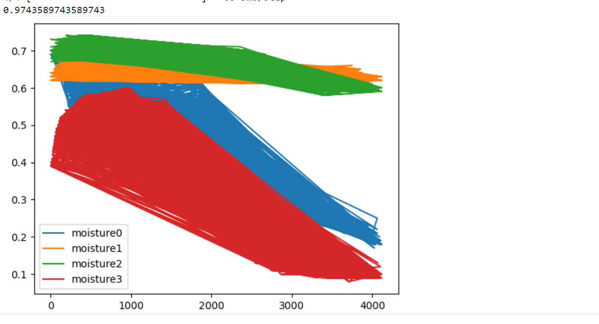

.png)
As the given problem statement the AI enabled well prediction requires parameters like water quality which uses some of the given attributes:
Portability - To have a well constructed at a particular reason water below it must be portable. The portable water must have a pH of 7 which must be drinkable. The hardness of water can be temporary or permanent based on chlorides and sulfates. Chloramine is a disinfectant used to treat drinking water. It is formed by mixing chlorine with ammonia. Although it is a weaker disinfectant than chlorine, it is more stable which extends its disinfectant benefits throughout a water utility's distribution system (a system of pipes that delivers water to homes).

The parameter required for well prediction can be the distribution of rainfall in a particular region. The dataset contains values which can be calculated pre-monsoon and post-monsoon. The another parameter which can be used is annual groundwater level extraction used to predict wells in a region. It can be calculated that the use of water is for industrial or domestic use and the proper utilisation of extracted water.
.png)